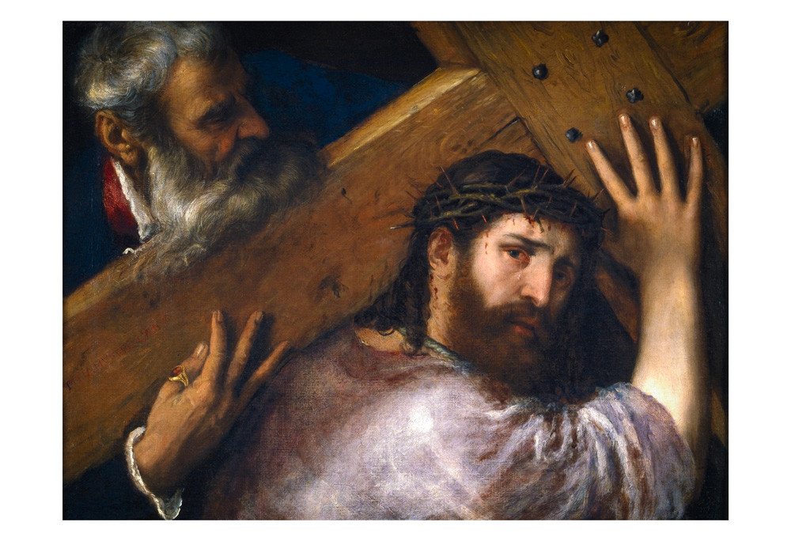

EL DESCUBRIMIENTO
DEL RENCOR
El Rencor
Colección Virtus — Terapia del Perdón
"Distinguimos diversos momentos en el proceso del perdón o curación del rencor: descubrir nuestros rencores y reconocer la ineficacia de los medios empleados hasta ahora para solucionar nuestro rencor; querer perdonar y alcanzar el perdón; finalmente, descubrir la libertad del perdón."

Nuestro Método
"Procederemos siguiendo siempre el mismo método que consiste en tres ejercicios:
(a) un texto de la Sagrada Escritura.
(b) una explicación de los aspectos más importantes.
(c) ciertos ejercicios personales en un Cuaderno de trabajo o Cuaderno espiritual."

I. DESCUBRIR LOS RENCORES
"Ayudarnos a reconocer nuestros rencores. No se trata de un trabajo superfluo pues muchos de nuestros resentimientos no son tan evidentes... La ira y el enojo propios, asustan a las personas o las humillan; por eso uno trata instintivamente de ocultar o disfrazar los propios enojos."
Pág. 17"El hecho mismo de que nos sorprenda oír... que la solución de ciertos problemas como el alcoholismo o la drogadicción tienen que ver con el resentimiento... es probativo de que muchos resentimientos están protegidos debajo de capas insospechadas."
Mecanismos de Defensa
“Dios dijo a Caín: ‘¿Por qué andas encolerizado?... si no obras bien, a la puerta está el pecado acechando como fiera que te codicia, y a quien tienes que dominar’...”
Génesis 4, 6-9
Pág. 18
Contexto Histórico
La Ley del Talión
"Ojo por ojo, diente por diente"
Doctrina Fundamental
"Existen distintos mecanismos para evitar reconocer o enfrentar el rencor... En el fondo ninguno de ellos consigue realmente evitarlo... tan sólo desvía el problema o lo reprime; de ahí que, tarde o temprano, emerja en forma de rabia o violencia."

(i) Negar los hechos
"Evitar encarar con sinceridad y claridad los enojos... es negar los hechos: 'en realidad nunca pasó nada'. Autoconvencernos de que no ha pasado nada no es grandeza de ánimo sino negación de la realidad."
"Dios no niega nuestros pecados, sino que los perdona."

Síntomas del rencor inconsciente
- Envidia y celos: Entristecerse por el éxito ajeno.
- Difamación y calumnia: Instrumentos del odio.
- Queja constante: Murmuración hostil.
- Disconformidad: Eterno desagrado con otros.

Vergüenza y Culpa
"Cuando estos afectos son muy intensos y tienden a abatirnos; guardamos mucha rabia contra nosotros mismos, por sentirnos culpables de ciertos fracasos o ruinas personales."
Reflexiones Finales
(i) ¿He evitado reconocer mis rencores?
(ii) ¿Soy consciente de mis amarguras?
(iii) ¿Contra quién guardo rencor?
(ii) ¿Soy consciente de mis amarguras?
(iii) ¿Contra quién guardo rencor?
